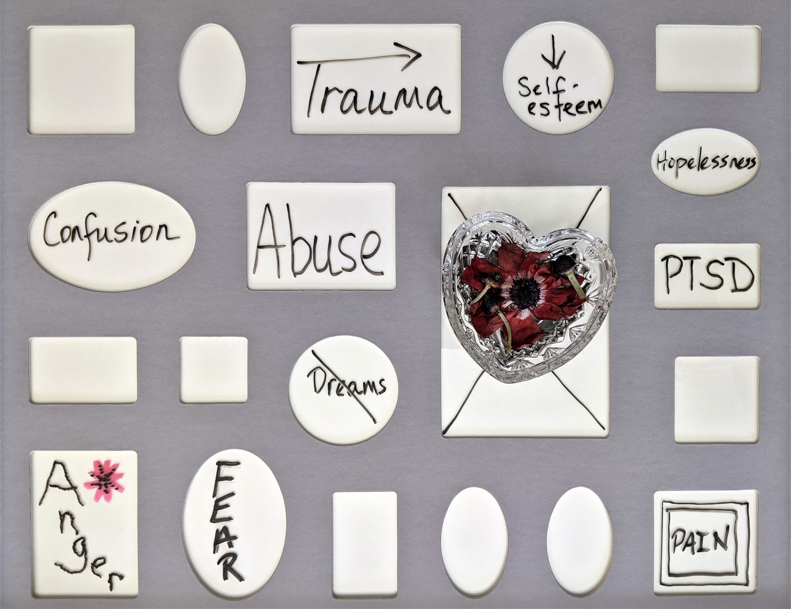

05:00
RESEARCH METHODS
Ajay Koli

Ajay Koli
Head, School of Data Science
Nalanda Academy - Wardha
koliajaykumar@gmail.com
ajay_kolii
Schedule
üìÖ From 07 Nov to 30 Nov 2022
⏰ From 6:00 to 8:00 PM IST
üö• 7~10 minutes of a break during each session
☕ Total 30~35 hours of teaching
Warning
üèÉ‚Äç‚ôÇÔ∏è üèÉ‚Äç‚ôÄÔ∏è BE ON TIME (plan for ten minutes early)
During the Sessions
üå† These slide‚Äôs online link is https://research-methods.netlify.app/
ü߆ Your Turn
üó£Ô∏è Interact during the sessions
üôè Be Kind!
ü߆ Your Turn
Please write what comes to your mind when you hear the word research.
why?
stories
science
üåè Science
“A set of logical, systematic, documented methods for investigating nature and natural processes; the knowledge produced by these investigations.”1
Inquiry1
Agreement Reality: Those things we “know” as part and parcel of the culture we share with those around us.
Epistemology: The science of knowing systems of knowledge.
Methodology: The science of finding out; procedures for scientific investigation.
ü§î Why Research?
“Research results in the creation of knowledge to solve a problem, answer a question, and better describe or understand something.” 1
Define Research
“the process of finding solutions to a problem after a thorough study and analysis of the situational factors”1
Define Research
“is about asking questions, exploring problems and reflecting on what emerges in order to make meaning from the data and tell the research story”1
Types of Business Research1
üßØ Applied research: ‚Äúto solve a current problem faced by the manager in the work setting, demanding a timely solution‚Äù
üìö Basic research: ‚Äúto generate a body of knowledge by trying to comprehend how certain problems that occur in organizations can be solved.‚Äù
ü߆ Your Turn
05:00
If you have to conduct research what will be your reason(s) and why?
rm help
Research Methods Help to Avoid1:
Over-generalization
Selective or inaccurate observation
Illogical reasoning
Resistance to change
Important
- Generalization will be coming back again and again in future sessions kindly make a note of it.
Research Methods Help to Avoid:
Over-generalization: “Occurs when we unjustifiably conclude that what is true for some cases is true for all cases”
Research Methods Help to Avoid:
Selective or inaccurate observation: “Choosing to look only at things that are in line with our preferences or beliefs.”
Research Methods Help to Avoid:
Illogical reasoning: “The premature jumping to conclusions or arguing on the basis of invalid assumptions.”

Research Methods Help to Avoid:
Resistance to change: “The reluctance to change our ideas in light of new information.”
goal
Four Goals of Social Research Are:1
To Describe
To Explore
To Explain
To Evaluate
Descriptive Research
Research in which social phenomena are defined and described.
Exploratory Research
Seeks to find out how people get along in the setting under question, what meanings they give to their actions, and what issues concern them.

Explanatory (Causal) Research
Seeks to identify causes and effects of social phenomena and to predict how one phenomenon will change or vary in response to variation in another phenomenon.
Evaluation Research
Research that describes or identifies the impact of social policies and programs.

ü߆ Your Turn
02:00
üëá What is the goal of this research paper?
Paper 1, https://academic.oup.com/jpubhealth/article/33/2/160/1591440
ü߆ Your Turn
02:00
üëá What is the goal of this research paper?
Paper 2, https://www.emerald.com/insight/content/doi/10.1108/JIMA-06-2018-0101/full/html
ü߆ Your Turn
02:00
üëá What is the goal of this research paper?
Paper 3, https://ieeexplore.ieee.org/abstract/document/9282866
Research
Approaches
Research Approach1
“Research approaches are plans and the procedures for research that span the steps from broad assumptions to detailed methods of data collection, analysis, and interpretation.”
“It involves the intersection of philosophical assumptions, designs and specific methods.”
Three Research Approaches are:
- Qualitative
- Quantitative, and
- Mixed methods
Qualitative Approach
“using words”
“for exploring and understanding the meaning individuals or groups ascribe to a social or human problem.”
open-ended questions and responses
flexible report structure

Quantitative Approach
use numbers
“for testing objective theories by examining relationship among variables”
closed-ended questions and responses
set structure
Mixed Methods Approach
- “an inquiry involving collecting both quantitative and qualitative data, integrating the two forms of data, and using distinct designs that may involve philosophical assumptions and theoretical frameworks.”

Qualitative methods, mixed methods, quantitative methods. pic.twitter.com/6iv8izV6Ag
— Dr Raul Pacheco-Vega ((raulpacheco?)) November 11, 2021
ü߆ Your Turn
10:00
Which research approach will you use to study the consumer satisfaction level for each product in India? And why?


Research
Framework
A Framework for Research
is the üï∏Ô∏è interconnection of:
Philosophical World-views,
Research Designs, &
Research Methods
A Framework for Research1
Philosophical World-view:
“A general philosophical orientation about the world and the nature of research that a researcher brings to a study”
Post-positivism:
Determination (cause & effect)
Reductionism
(concept \(\rightarrow\) variables \(\rightarrow\) hypothesis)Empirical observation and measurement
Theory verification
Constructivist:
Understanding
Multiple participant meanings
Social & historical construction
Theory generation
Transformative:
During the 1980s & 1990s for marginalized individuals in society
Issues of power and social justice, discrimination, and oppression.
Includes critical theorists; Marxists; feminists; racial and ethnic minorities; person with disabilities; indigenous and post colonial peoples; and members of LGBTQ.
Research contain action and change-oriented
Pragmatic:
It arises out of actions, situations, and consequence of actions
Problem-centred instead of methods
Pluralistic
Real-world practice oriented
Research Designs:
“These are types of inquiry within qualitative, quantitative, and mixed methods approaches that provide specific direction for procedures in a research study”
Research Designs: “types of inquiry”
Visible during the 1990s and in the 21st century.
Narrative research from the humanities … one or more individuals to provide stories about their lives.
Phenomenology from philosophy and psychology … description culminates in the essence of the experiences for several individuals who have all experienced the phenomenon.
Grounded theory from sociology in which the researcher derives a general, abstract theory of a process, action, or interaction grounded in the view of participants.
Ethnography from anthropology and sociology in which the research studies the shared patterns of behaviors, languages, and actions of an intact cultural group in a natural setting.
Case study researcher develops an in-depth analysis of a case … collect detailed information using a variety of data collection procedures
During the late 19th century and throughout the 20th century.
Experimental Designs seeks to determine if a specific treatment influences an outcome.
Survey research provides a quantitative or numeric description of trends, attitudes, or opinions of a population by studying a sample of that population.
Began in late 1980s
Convergent mixed methods collects both forms of data at the same time and integrates the information in the results.
Explanatory sequential quantitative studies followed by the qualitative study, the qualitative study was conducted to explain further/better the results of quantitative study.
Exploratory sequential qualitative study was done first then this study’s results are used to do the quantitative study.
Transformative, embedded, or multi-phase
Research Methods
“Involve the forms of data collection, analysis, and interpretation that researchers propose for their studies”
Research Methods:
Emerging methods
Open-ended questions
Interview data, observation data, document data & audiovisual data
Text & image analysis
Themes, patterns interpretation
Pre-determined methods
Instrument based questions
Performance data, attitude data, observational data, & census data
Statistical analysis
Statistical interpretation
Both predetermined & emerging methods
Both open- and closed- ended questions
Multiple forms of data drawing on all possibilities
Statistical & text analysis
Across databases interpretation
Approaches = Worldview + Design + Methods
Constructivist worldview
Ethnographic design
Observation of behavior
Post-positivist worldview
Experimental design
Measures of attitudes
Pragmatic world-view
Collection of both qualitative & quantitative data
ü߆ Your Turn
05:00
Take a topic that you would like to study, and using the combinations of worldviews, designs, and research methods, discuss a project that brings together a worldview, designs, and methods. Identify whether this would be quantitative, qualitative, or mixed methods research.
ethics
Ethics & Research1
- “code of conduct or expected societal norms of behaviour while conducting research.”
- Ethical conduct applies to:
the organization,
the members that sponsor the research,
the researchers who undertake the research, and
the respondents who provide them with the necessary data.
Nuremberg War Crime Trials (1946)


Tuskegee Syphilis study (1932-1972)

Ethical Issues in Research1
Prior to conducting the study
Beginning of the study
Collecting data
Analyzing data
Reporting, sharing, and storing data
Prior to conducting the study
Examine professional association standards.
Seek college/university approval on campus through the board.
Gain local permission from site and participants.
Select a site without a vested interest in outcome of study.
Negotiate authorship for publication
Consult the code of ethics for professional association in your area.
Submit proposal for board approval.
Identify and go through local approvals; find gatekeepers or key personnel to help.
Select sites that will not raise power issues with researchers.
Give credit for work done on the project; decide on author order in future publication.
Beginning the Study
Identify a research problem that will benefit participants.
Disclose purpose of the study.
Do not pressure participants into signing consent forms.
Respect norms and charters of indigenous societies.
Be sensitive to needs of vulnerable populations (eg., children).
Conduct a needs assessment or informal conversation with participants about their needs.
Contact participants, and inform them of the general purpose of the study.
Tell participants that they do not have to sign form.
Find out about cultural, religious, gender, and other differences that need to be respected.
Obtain appropriate consent (eg., parents, as well as children).
Collecting Data
Respect the site, and disrupt as little as possible.
Make certain that all participants receive the same treatment.
Avoid deceiving participants.
Respect potential power imbalances and exploitation of participants (eg., interviewing, observing).
Do not “use” participants by gathering data and leaving site.
Avoid collecting harmful information.
Build trust, and convey extent of anticipated disruption in gaining access.
Put into place wait list provisions for treatment for controls.
Discuss purpose of the study and how data will be used.
Avoid leading questions. Withhold sharing personal impressions. Avoid disclosing sensitive information. Involve participants as collaborators.
Provide rewards for participating.
Stick to questions stated in an interview protocol.
Analyzing Data
Avoid siding with participants (going native).
Avoid disclosing only positive results.
Respect the privacy and anonymity of participants.
Report multiple perspectives.
Report contrary findings.
Assign fictious names or aliases; develop composite profiles of participants.
Reporting, Sharing, & Storing Data
Avoid falsifying authorship, evidence, data, findings, and conclusions.
Do not plagiarize.
Avoid disclosing information that would harm participants.
Communicate in clear, straightforward, appropriate language.
Share data with others
Keep raw data and other materials (eg., details of procedures, instruments.)
Do not duplicate or piecemeal publications.
Provide complete proof of compliance with ethical issues and lack of conflict of interest, if requested.
State who owns the data from a study.
Report honestly.
See APA guidelines for permissions needed to reprint or adapt work of others.
Use composite stories so that individuals cannot be identified.
Use unbiased language appropriate for audiences of the research.
Provide copies of report to participants and stakeholders. Share results with other researchers. Consider website distribution. Consider publishing in different languages.
Store data and materials for 5 years (as per APA).
Refrain from using the same material for more than one publication.
Disclose funders for research. Disclose who will profit from the research.
Give credit for ownership to researcher, participants, and advisers.
IMPORTANT TERMS1
Anonymity: Anonymity is guaranteed in a research project when neither the researchers nor the readers of the findings can link a given response with a given respondent.
Confidentiality: A research project guarantees confidentiality when the researcher can identify a given person’s responses but promises not to reveal them publicly.
Debriefing: Interviewing subjects to learn about their experience of participation in the project and to inform them of any unrevealed purpose.
Informed Consent: A norm in which subjects base their voluntary participation in research projects on a full understanding of the possible risks involved.
Research
Proposal
Research Proposal1
Most organized research begins with a description of what is planned in the project: what questions it will raise and how it will answer them.
Often such proposals are created for the purpose of getting the resources needed to conduct the research envisioned.
Research Proposal1
-
Before any research study is undertaken, there should be an agreement between the person who authorizes the study and the researcher as to:
the problem to be investigated,
the methodology to be used,
the duration of the study, and
its cost.
Arguments Presented in a Proposal
What do readers need to better understand your topic?
What do readers need to know about your topic?
What do you propose to study?
What is the setting, and who are the people you will study?
What methods do you plan to use to collect data?
How will you analyze the data?
How will you validate your findings?
What ethical issues will your study present?
What do preliminary results show about the practicability and value of the proposed study?
Format for a Quantitative Proposal
Introduction
Statement of the problem (issue, existing literature about problem, deficiencies in literature, relevance of study for audiences)
Purpose of the study
Research questions or hypotheses
Theoretical perspective
Review of the literature (theory may be included in this section instead of the introduction)
Methods
Type of research design (e.g., experimental, survey)
Population, sample, and participants
Data collection instruments, variables, and materials
Data analysis procedures
Anticipated ethical issues in the study
Preliminary studies or pilot tests
Appendixes: Instruments, timeline, and proposed budget
Tips: Designing the Sections of a Proposal1
Specify the sections early in the design of a proposal. … develop an outline.
Study previous proposal for the same organisation or supervisor.
Attend program or course on proposal development
Sit down with your adviser or supervisor, and go over his or her preferred format for a proposal.
writing
Writing Ideas1
“to practice writing rather than simply talk about it”
üí≠ Writing as Thinking
Early in the process of research, write ideas down rather than talk about them.
Working through several drafts of a proposal rather than trying to polish the first draft
üí≠ Writing as Thinking: Zero Draft
Do this exercise once a day for a week.
At the end of the week, you’ll have written thousands of words.
Out of these thousands of words, you’ll have a few hundred (or even more) useful words.
Write them separately. Or, you can cut and paste them in a new document.— Mushtaq Bilal, PhD ((MushtaqBilalPhD?)) November 11, 2022
üí≠ Writing as Thinking
-
Do not edit your proposal at the early-draft stage.
- First develop an outline; it could be a sentence or word outline or a visual map
- Write out a draft and then shift and sort ideas, moving entire paragraphs in the manuscript.
- Finally, edit and polish each sentence.
üìù The Habit of Writing
Establish the discipline of writing in a regular and continuous way on your proposal.
Make writing a daily activity, regardless of mood, regardless of readiness to write.
Write while you are fresh.
Avoid writing in binges (excessive).
Write in small, regular amounts
Schedule writing tasks
Time spent writing + page finished + tasks completed
Share your writing with supportive peers.
ü§Æ Reabability of the Manuscript/Draft
Use consistent terms in your proposal.
Readers need road signs to guide them from one major idea to the next.
Coherence in writing means that the ideas tie together and logically flow from one sentence to another and from one paragraph to another.
Voice, Tense, and “Fat”
Use the active voice as much as possible in scholarly writing.
Use strong active verbs.
-
Pay close attention to the tense of past studies:
- Past simple tense or the present perfect tense for the literature review and procedures based on past events,
- The past simple tense to describe results,
- The present tense to discuss the results and to present the conclusions.
Edit and revise drafts to trim the fat.
“If I have seen further,
it is by standing on the
shoulders of giants.”
- Newton (1675)
- Find an argument/angle
- So what?
- Advance the conversation
Citation
“Citing sources allows scholars to give credit to other scholars for their hard work and their ideas.”
“By citing sources, scholars provide a roadmap for readers who are interested in learning more about a topic and joining the ongoing conversation about that topic.”
References/Bibliography
References/Bibliography
üö® Plagiarism1
“Purposely misrepresenting the work of other authors – that is, their viewpoints, ideas, models, findings, conclusions, interpretations, and so on.”
“Plagiarism – the use of another’s original words, arguments, or ideas as though they were your own, even if this is done in good faith, out of carelessness, or out of ignorance.”
üòå How to Avoid Plagiarism
-
Keep track of your sources; print electronic sources
- complete URL & date
- check URL before submission
-
Keep sources in correct context
- unbiased
-
Don’t cut and paste: File and label your sources
- separate file with date (2021-12-29-belk.doc)
üòå How to Avoid Plagiarism
Keep your own writing and your sources separate
Keep your notes and your draft separate
-
Paraphrase carefully in your notes; acknowledge your sources explicitly when paraphrasing
- separate notes from draft
Don’t save your citations for later
Always use quotation marks for directly quoted material, even for short phrases and key terms.
Completed Research is the Best Research
ü߆ Your Turn
15:00
- Describe an object by its parts and dimensions, without first telling the reader its name.
OR
- Write a conversation between two people on any dramatic subject.
OR
- Write a set of directions for a complicated task.
üèÜ Hallmarks of Scientific Research1
Purposiveness
Rigour
Testability
Replicability
Precision and confidence
Objectivity
Generalizability
Parsimony
Hallmarks of Scientific Research
Purposiveness: a definite aim or purpose or goal.
Rigour: a good theoretical base and a sound methodological design.
Testability: hypotheses should be testable.
Replicability: similar findings emerge on the basis of data collected by others employing the same methods.
Hallmarks of Scientific Research - Precision and confidence:
-
To design the research in a manner that ensures that our findings are as close to reality as possible.
- Precision: refers to the closeness of the findings to “reality” based on a sample.
- Confidence: refers to the probability that our estimations are correct.
Hallmarks of Scientific Research - Objectivity:
Conclusions should be based upon the facts of the findings derived from actual data,and not on our own subjective or emotional values.
The more objective the interpretation of the data, the more scientific the research investigation becomes.
Hallmarks of Scientific Research - Generalizability:
Refers to the scope (wider range) of applicability of the research findings in one organizational setting to other settings.
Not many research findings can be generalized to all other settings.
A more elaborate sampling design, which would doubtless increase the generalizability of the results.
Hallmarks of Scientific Research - Parsimony:
Simplicity in explaining the phenomena or problems that occur.
A good understanding of the problem and the important factors that influence it.
cook
book
ü•ò Let‚Äôs cook‚Ķ
What to cook?
How to cook?
What is the result of your cooking?
How similar or different is your cooked dish?
So what, you cooked this dish (sh!t)?
ü•ò Let‚Äôs cook‚Ķ Research
-
What to cook?
- Title + Abstract + Introduction + Literature Review
-
How to cook?
- Method
-
What is the result of your cooking?
- Results
-
How similar or different is your cooked dish?
- Discussion
-
So what, you cooked this dish (sh!t)?
- Conclusion + References + Appendix
Research Paper Hourglass Structure
ü•ò Research Report Structure
- Title (as per APA < 12 words)
- Abstract (150-250 words)
- Introduction
- Method (Participants + Procedure)
- Results
- Discussion
- References
- Appendix
INTRODUCTION
üçΩÔ∏è A Good Introduction Addresses1:
Establishing the problem leading to the study,
Reviewing the literature about the problem,
Identifying deficiencies in the literature about the problem,
Targeting an audience and noting the significance of the problem for this audience, and
Identifying the purpose of the proposed study.
The Research Problem
Identification of the Broad Problem
\(\downarrow\)
Preliminary Research
\(\downarrow\)
Definition of the Research Problem
The Research Topic1
“The topic is the subject or subject matter of a proposed study”
“casteism”, “organizational creativity”, “psychological stress”, “consumer buying behavior”, “exam anxiety”
“The topic becomes the central idea to learn about or to explore”
“topic grounds us and provides a sign of what we are studying.”
How to write a working Title?
Tip
“My study is about …”
“Good” Research Question1
Feasibility given the time and resources available
Social importance, and
Scientific relevance
Good Topic or Question
“adds to the pool of research knowledge in the literature available on the topic, …
replicate past studies, …
lifts up the voices of under-represented groups or individuals, …
helps address social justice, or …
transforms the ideas and beliefs of the researcher.”
üîçüëÄ A new perspective or ‚Äúangle‚Äù to the existing literature:
Studying an unusual location (e.g., rural India).
Examining an unusual group of participants (e.g., refugees).
Taking a perspective that may not be expected and reverses the expectation (e.g., why marriages do work rather than do not work).
üîçüëÄ A new perspective or ‚Äúangle‚Äù to the existing literature:
Providing novel means of collecting data (e.g., collect sounds).
Presenting results in unusual ways.
Studying a timely topic (e.g., immigration issues)
Studies Addressing the Problem
Reviewing studies that have examined the issue.
Summarize large groups of studies instead of individual ones.
Justify the importance of the study
To create distinction between past studies and the proposed one.
Deficiencies in Past Literature
Topics have not been explored with a particular group, sample, or population;
The literature may need to be replicated or repeated;
The voices of underrepresented groups left
“future research”
Significance of a Study for Audiences
3 or 4 reasons that the study adds to scholarly research and literature in the field.
3 or 4 reasons about how the study helps improve practice.
3 or 4 reasons as to why the study will improve policy or decision making.
lit review

How does this project contribute to the literature?
“Research is to see what everybody else has seen, and to think what nobody else has thought.”
– Albert Szent-Gyorgyi
üìö Why Literature Review?
“literature review helps to determine whether the topic is worth studying, and it provides insight into ways in which the researcher can limit the scope to a needed area of inquiry.”
“to consider whether the research topic can and should be researched”
üìö Purpose of Literature Review:
It shares with the reader the results of other studies that are closely related to the one being undertaken.
It relates a study to the larger, ongoing dialogue in the literature, filling in gaps and extending prior studies
It provides a framework for establishing the importance of the study as well as a benchmark for comparing the results with other findings.
üìö LR Sources
Textbooks
Journals
Theses
Conference proceedings
Unpublished manuscripts
Reports
Newspapers
The Internet
üò≠ Literature Review Process
Search for that one reason/sentence while writing. #AcademicTwitter (OpenAcademics?) (PhDVoice?) (PhD_Genie?) pic.twitter.com/DzaYRY8Acr
— Dr. Imran Farooq ((drimran_farooq?)) December 19, 2021
üò≠ Literature Review Process1‚Ķ
Begin by identifying key words.
Searching the databases like Google Scholar, Web of Science, EBSCO, ProQuest, and JSTOR or you can also use website like Library Genesis to download books and papers.
Locate about 50 reports of research in articles or books related to research on your topic.
Skim this initial group of articles or chapters, and collect those that are central to your topic.
üò≠ Literature Review Process‚Ķ
Designing a literature map … a visual picture of groupings of the literature on the topic that illustrates how your particular study will add to the existing literature and position your study within the larger body of research.
Begin to draft summaries of the most relevant articles. Include precise references to the literature using an appropriate style guide like APA.
üò≠ Literature Review Process
- After summarizing the literature,
assemble the literature review, structuring it thematically or organizing it by important concepts.
This summary should also point toward the methods …
It is at this point as well that you could advance a critique of the past literature and point our deficiencies in it and issues in its methods.

üõ†Ô∏è Literature Review Tools
Academic writing is wild bc you’ll read four articles just to write one sentence.
Anyway, here‚Äôs a thread of resources I‚Äôve been using to speed through this review I‚Äôm working on:‚Äî Anicca Harriotüî¨ ((13adh13?)) June 20, 2021
Connected Papers
Connected Papers
“A visual tool to help researchers and practitioners find and explore academic papers.”1
“Connected Papers uses a single, user-chosen ‘origin paper’ to build a map of related research, based partly on overlapping citations. The service recently surpassed one million users”2
Website: https://www.connectedpapers.com/
Open Knowledge Maps
Open Knowledge Maps
“We are a charitable non-profit organization and we believe that a better way to explore and discover scientific knowledge will benefit us all.”
“Our Goal is to revolutionize discovery of scientific knowledge. We are building a visual interface that dramatically increases the visibility of research findings for science and society alike.”
Website: https://openknowledgemaps.org/index
Scholarcy
Scholarcy
“The AI-powered article summarizer”
“reads your research articles, reports and book chapters in seconds and breaks them down into bite-sized sections”
Website: https://www.scholarcy.com/
Speechify
“Reading is hard. Listening is easy. Listen to the things you normally read with the #1 text-to-speech AI reader.”
Website: https://speechify.com/
scite_
“1.1b citation statements extracted and analyzed from over 32m full-text articles”
“helps you see whether publications, research results, and claims have been supported, contrasted, or mentioned by other researchers.”
Website: https://www.scite.ai/
theory
Theory
“explains a certain phenomenon, …
and the idea is that this explanation will hold in a wide range of settings.”1
“theory is any concept, instrument, model, or framework that helps them to think about or solve a problem, to describe a phenomenon, or to better understand a topic of interest”
Expectancy Theory of Motivation
By Victor Vroom (in 1964):
“people will choose how to behave depending on the outcome they expect as a result of their behavior.”
Expectancy Theory:1
“people decide what to do based on what they expect the outcome to be”
“individuals are motivated to perform if they know that their extra performance is recognized and rewarded”
The Role of Theory
Some research is aimed at building theory …
other to test a theory …
to describe what is going on, using an existing framework, instrument, or model.
The Use of Theory1
In quantitative research,
Researchers often test hypotheses stemming from theories.
Broader theory guiding the study hypotheses.
The Use of Theory
In qualitative research
It may generate a theory as the final outcome of a study and place it at the end of a project
Sometimes it comes at the beginning and provides a lens that shapes what is looked at and the questions asked
The Use of Theory
In mixed methods research
Researchers may both test theories and generate them
Contain a theoretical framework within which both quantitative and qualitative data are collected
Quantitative Theory Use
Causality: means we would expect variable X to cause variable Y.
-
Does drinking one glass of red wine daily cause you have a reduced risk for a heart attack?
\[Red\;Wine \longrightarrow Heart\;attack\]
\[X \longrightarrow Y\]
Variables in Quantitative Research
Variable: “refers to a characteristic or attribute of an individual or an organization that can be measured or observed and that varies among the people or organization being studied.”
Gender, age, socio-economic status; attitudes or behaviours such as racism, social control, political power, leadership etc..
Variables in Quantitative Research
-
Independent variables:
Those that influence, or affect outcomes in experimental studies.
They are manipulated in an experiment and thus independent of all other influences.
Variables in Quantitative Research
-
Dependent variables:
Those that depend on the independent variables,
They are the outcomes or results of the influence of the independent variables
Variables in Quantitative Research
Independent variable/Predictor variable
Dependent variable / Outcome variable
Confounding variable
Mediating variable
Moderating variable
Theory in Quantitative Research
- “A set of interrelated constructs (variables), definitions, and prepositions that presents a systematic view of phenomena by specifying relations among variables, with the purpose of explaining natural phenomena” (adapted from Kerlinger 1979)
Theory in Quantitative Research
“Theory helps to explain (predict) phenomena that occur in the world”
“Theories develop when researchers test a prediction over and over.”
Developing a Theory
Investigators combine independent, mediating, and dependent variables into questions.
These questions provide information about the type of relationship (positive, negative, or unknown) and its magnitude (high or low).
Forming this information into a predictive statement (hypothesis)
When researcher test hypotheses over and over in different settings and with different populations, a theory emerges, and someone gives it a name.
Theory develops as an explanation to advance knowledge in particular fields.
Levels of Theory
Micro-level Theories: provide explanations limited to small slices of time, space, or number of people; such as Goffman’s theory of face work.
Meso-level Theories: link micro and macro levels; like theories of organizations, social movement, or communities; such as Collin’s theory of control in organizations.
Maco-level Theories: explain larger aggregates, such as social institutions, cultural systems, and whole societies; such as theory of social stratification.
Placing Theory in a Quant Study
| Placement | Advantage | Disadvantage |
|---|---|---|
| In the introduction | As an approach often found in journal articles, it will be familiar to readers. It conveys a deductive approach. | It is difficult for a reader to isloate and speparate theory base from other components of the research process (e.g., with the methods). |
| In the literature review | Theories are found in the literature, and their inclusion in a literature review is a logical extension or part of the literature. | It is difficult for a reader to see the theory in isolation form topics being reviewed in the literature. |
| After hypotheses or research questions as a rationale. | The theory discussion is a logical extension of hypotheses or research questions because it explains how and why variables are related. | A write may include a theoretical rationale after hypotheses and questions and leave out an extended discussion about the origin and rationale for the use of the theory. |
| In a separate section | This approach clearly separates the theory from other components of the research process, and it enables a reader to better identify and to understand the theory base for the study. | The theory discussion standss in isolation from other components of the research proceess (e.g., the questions of the methods) and, as such, a reader may not easily connect it with other components of the research process. |
Writing Quant Theoretical Perspective
Tip
“The theory that I will use is ………….. (name the theory). It was developed by …………….. (identify the origin, source, or developer of the theory), and it was used to study ………….. (identify the topics where one finds the theory being applied). This theory indicates that …………….. (identify the propositions or hypotheses in the theory). As applied to my study, this theory hold that I would expect my independent variable(s) ………….. (state independent variables) to influence or explain the dependent variable(s) ……………. (state dependent variables) because ………….. (provide a rationale based on the logic of the theory).”
Qualitative Theory Use
Qual Theoretical Perspectives
Feminist perspectives: realizing social justice for women.
Racialized discourses: about people and communities of colour.
Critical theory: empowering human beings to overcome race, class, gender, and caste.
Queer theory: focuses on LGBT people.
Disability inquiry: understanding this population’s sociocultural perspectives.
Inductive Logic in Qual Study
\[Researcher\;poses\;generalizations\;or\;theories\\from\;past\;experience\;and\;literature\\ \uparrow \\ Researcher\;looks\;for\;broad\;patterns,\\\; generalizations,\;or\;theories\;from\;themes\;or\;categories\]
Research Strategy
Deductive Research
Inductive Research
KEY TERMS
- Causality
METHODS
DATA
ANALYSIS
FINDINGS
CONCLUSION
Image Sources
- Title slide image is from am Irish artist Miriam Sweeney
- Introduction slide image is from Mae Mu
- Methods slide image is from Mae Mu
- Data analysis slide image is from Sebastian Coman
- Findings slide image is from Josepth Gonzalez
- Conclusion slide image is from Andy Holmes
References
Babbie, Earl R. 2020. The Practice of Social Research. Cengage Learning.
Chambliss, Daniel F., and Russell K. Schutt. 2018. Making Sense of the Social World: Methods of Investigation. SAGE Publications.
Clough, Peter, and Cathy Nutbrown. 2012. A Student’s Guide to Methodology. 3rd ed. London: SAGE Publications Ltd.
Creswell, John W., and J. David Creswell. 2018. Research Design: Qualitative, Quantitative, and Mixed Methods Approaches. 5th ed. Los Angeles: Sage publications.
Sekaran, Uma, and Roger Bougie. 2016. Research Methods For Business: A Skill Building Approach. John Wiley & Sons.
ü§ù Social Science
“The use of scientific methods to investigate individuals, societies, and social processes; the knowledge produced by these investigations.”1